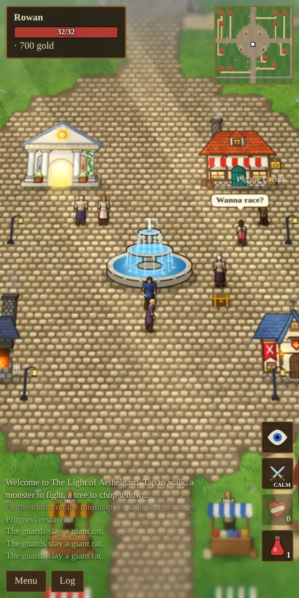

The Aethelgard Field Guide
A player’s handbook for The Light of Aethelgard: how to make a hero, how to fight, how magic and skills work, and who is waiting for you in town.
The Light of Aethelgard is a storybook role-playing game set on a small island kingdom. You start in the town square with a dagger, a healing potion and fifty gold. Beyond the walls are forests full of rats and orcs, eleven dungeons with a boss at the bottom of each, mines full of ore, and a hooded stranger who is waiting to see what you become.
There are no classes. Every hero starts with the same skills. You become a swordsman, an archer, a mage, a smith or a thief by doing those things, and the game remembers how you treat its people.
New players should read Getting Started first. Each chapter ends with a link to the next one.

Chapters
Your first hour
- Make a character and spend your 50 attribute points. Strength is the safest choice for a first hero because it sets your health.
- Talk to Mara in the shop and buy a Longsword (150 gold) as soon as you can afford one. Sell her the rat tails and orc ears you collect.
- Fight rats and orcs just outside the walls. Every swing can raise Swordsmanship and Tactics.
- Chop trees for logs, and craft arrows and a bow from the Craft menu to try archery.
- When you have a few healing potions, follow a purple mark on the minimap to the Orc Warren, the easiest dungeon.
- If you get hurt, the priests in the temple heal you for free.